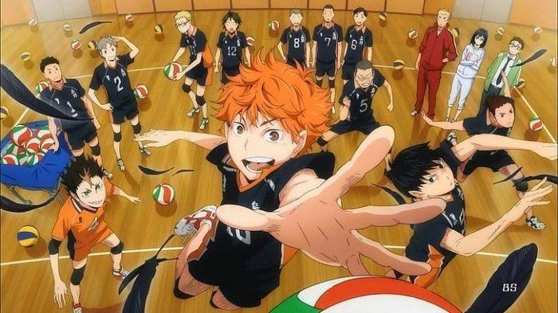
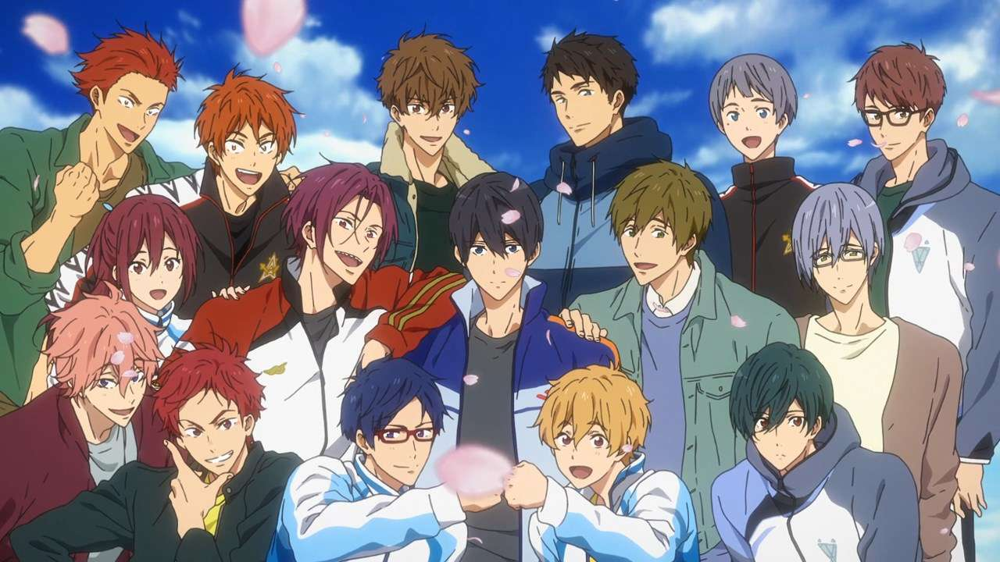
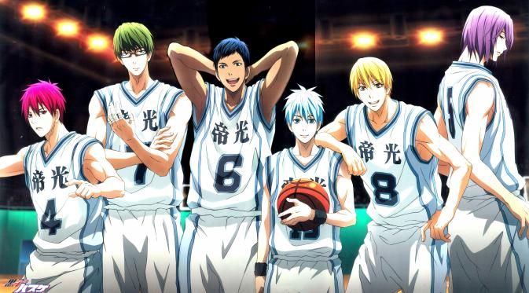
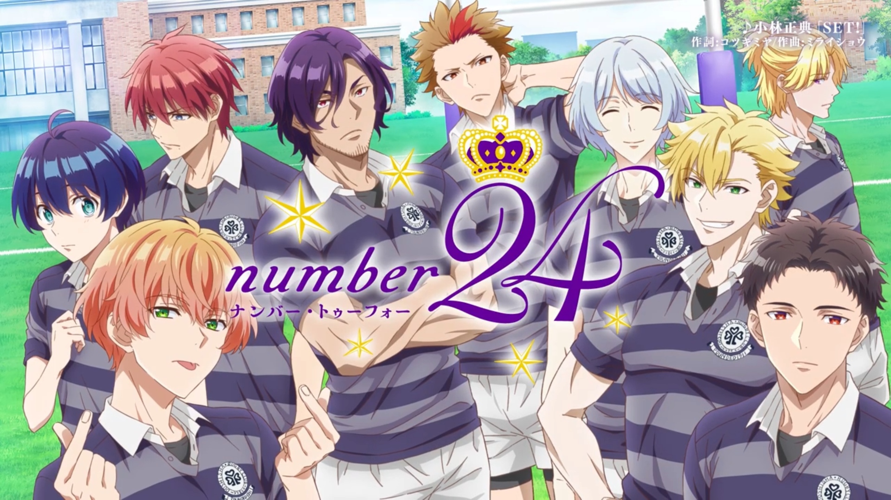

REKOMENDASI
ANIME SPORT
Anime Sport adalah salah satu genre anime yang paling populer. Anime ini menceritakan tentang perjuangan para atlet untuk meraih kemenangan dalam berbagai cabang olahraga. Anime sport memiliki banyak hal yang bisa dinikmati oleh penonton. Selain ceritanya yang seru dan menegangkan, anime sport juga bisa menjadi sumber inspirasi dan motivasi. Anime sport sering kali menceritakan tentang perjuangan para atlet untuk meraih impian mereka. Perjuangan ini bisa menjadi sumber inspirasi bagi penonton untuk tidak pernah menyerah pada impian mereka. Misalnya, anime Haikyuu!! menceritakan tentang perjuangan tim voli SMA Karasuno untuk meraih kemenangan. Anime ini mengajarkan kita bahwa kerja sama dan persahabatan adalah kunci untuk meraih kesuksesan.
Haikyuu
 Haikyuu adalah anime yang menceritakan tentang perjuangan tim voli SMA Karasuno untuk meraih kemenangan. Anime ini diadaptasi dari manga karya Haruichi Furudate yang diterbitkan pada tahun 2012.
Cerita dimulai dengan Hinata Shoyo, seorang anak yang bermimpi menjadi pemain voli profesional. Hinata sangat mengagumi pemain voli SMA Karasuno, Kageyama Tobio, yang dikenal sebagai "Kageyama King of the Court". Hinata bertekad untuk mengalahkan Kageyama dan membawa Karasuno menjadi juara nasional.
Hinata bergabung dengan tim voli Karasuno, yang pada saat itu sedang dalam masa surut. Tim ini dipimpin oleh Daichi Sawamura, seorang kapten yang selalu optimis dan gigih. Di bawah kepemimpinan Daichi, Hinata dan teman-teman satu timnya mulai berlatih dengan giat.
Karasuno menghadapi berbagai tantangan dalam perjalanannya menuju kemenangan. Mereka harus menghadapi tim-tim yang lebih kuat, serta cedera dan masalah pribadi. Namun, mereka tidak pernah menyerah dan terus berjuang untuk meraih impian mereka.
Free! Eternal Summer
 Free! adalah serial anime olahraga yang menceritakan tentang persahabatan dan persaingan antara empat pemuda yang menyukai renang. Anime ini diadaptasi dari novel ringan berjudul High Speed! karya Kōji Oji.
Cerita dimulai dengan Haruka Nanase, Makoto Tachibana, Nagisa Hazuki, dan Rei Ryuugazaki, yang merupakan teman masa kecil yang dulunya berenang bersama di klub renang Iwatobi. Mereka berpisah setelah Haruka memutuskan untuk berhenti berenang.
Bertahun-tahun kemudian, Haruka, Makoto, dan Nagisa bertemu kembali di SMA Iwatobi. Mereka mulai berlatih renang bersama lagi dan mereka memutuskan untuk membentuk klub renang baru.
Sementara itu, Rei bergabung dengan klub renang SMA Samezuka, yang dipimpin oleh Rin Matsuoka, saingan masa kecil Haruka. Rin adalah seorang perenang profesional yang telah kembali ke Jepang untuk berkompetisi di kejuaraan nasional.
Haruka, Makoto, Nagisa, dan Rei mulai bersaing satu sama lain untuk meraih impian mereka. Mereka harus menghadapi berbagai tantangan, seperti cedera, masalah pribadi, dan persaingan dari tim-tim renang lain. Namun, mereka tidak pernah menyerah dan terus berjuang untuk meraih impian mereka.
Kuroko No Basket

Kuroko no Basket adalah anime olahraga yang menceritakan tentang perjalanan tim basket SMA Seirin untuk meraih kemenangan. Anime ini diadaptasi dari manga karya Tadatoshi Fujimaki.
Cerita dimulai dengan Kuroko Tetsuya, seorang pemain basket yang memiliki kemampuan untuk membuat umpan yang tak terlihat oleh lawan. Kuroko bergabung dengan tim basket SMA Seirin, yang pada saat itu sedang dalam masa surut.
Di Seirin, Kuroko bertemu dengan Kagami Taiga, seorang pemain basket yang baru kembali dari Amerika Serikat. Kagami adalah pemain yang sangat berbakat dan dia bertekad untuk membawa Seirin menjadi juara nasional.
Kuroko dan Kagami bergabung dengan tim basket Seirin dan mereka mulai berlatih dengan giat. Mereka juga mulai menghadapi tantangan baru, seperti tim-tim yang lebih kuat, serta cedera dan masalah pribadi. Namun, mereka tidak pernah menyerah dan terus berjuang untuk meraih impian mereka
Yuri on Ice
 Yuri on Ice adalah anime olahraga yang menceritakan tentang perjalanan seorang skater figure profesional, Yuri Katsuki, untuk meraih medali emas di Grand Prix Final. Anime ini diadaptasi dari manga karya Mitsurō Kubo.
Cerita dimulai dengan Yuri Katsuki, seorang skater figure asal Jepang, yang kalah telak dalam ajang Grand Prix Final. Yuri merasa patah semangat dan dia memutuskan untuk pensiun dari dunia skating.
Ketika Yuri sedang dalam masa surut, dia mengunggah video dirinya meniru koreografi dari idola skaternya, Victor Nikiforov, ke media sosial. Video tersebut menjadi viral dan menarik perhatian Victor, yang kemudian memutuskan untuk menjadi pelatih Yuri.
Dengan bimbingan Victor, Yuri mulai berlatih kembali untuk meraih medali emas di Grand Prix Final. Yuri juga mulai mengembangkan hubungan yang romantis denganVictor.
Yuri on Ice adalah anime olahraga yang menceritakan tentang perjalanan seorang skater figure profesional, Yuri Katsuki, untuk meraih medali emas di Grand Prix Final. Anime ini diadaptasi dari manga karya Mitsurō Kubo.
Cerita dimulai dengan Yuri Katsuki, seorang skater figure asal Jepang, yang kalah telak dalam ajang Grand Prix Final. Yuri merasa patah semangat dan dia memutuskan untuk pensiun dari dunia skating.
Ketika Yuri sedang dalam masa surut, dia mengunggah video dirinya meniru koreografi dari idola skaternya, Victor Nikiforov, ke media sosial. Video tersebut menjadi viral dan menarik perhatian Victor, yang kemudian memutuskan untuk menjadi pelatih Yuri.
Dengan bimbingan Victor, Yuri mulai berlatih kembali untuk meraih medali emas di Grand Prix Final. Yuri juga mulai mengembangkan hubungan yang romantis denganVictor.
Number 24
Number24 adalah anime olahraga yang menceritakan tentang perjuangan Natsusa Yuzuki, seorang mantan pemain rugby yang tidak bisa lagi bermain karena cedera, untuk menjadi manajer tim rugby universitasnya. Anime ini diadaptasi dari novel karya Mizuki Nomura.
Cerita dimulai dengan Natsusa Yuzuki, seorang pemuda yang bermimpi menjadi pemain rugby profesional. Natsusa adalah pemain yang berbakat dan dia memiliki potensi untuk menjadi bintang.
Namun, impian Natsusa hancur ketika dia mengalami kecelakaan sepeda motor yang menyebabkan cedera tulang belakang. Cedera tersebut membuatnya tidak bisa lagi bermain rugby.
Meskipun begitu, Natsusa tidak menyerah pada rugby. Dia memutuskan untuk menjadi manajer tim rugby universitasnya, Doshisha University.
Natsusa bergabung dengan tim Doshisha, yang dipimpin oleh Ibuki Ueoka, seorang pemain rugby jenius yang pernah menjadi ace tim. Natsusa bertekad untuk membantu tim Doshisha meraih gelar juara liga.
Namun, Natsusa dan tim Doshisha menghadapi berbagai tantangan. Mereka harus menghadapi tim-tim yang lebih kuat, serta cedera dan masalah pribadi. Namun, mereka tidak pernah menyerah dan terus berjuang untuk meraih impian mereka.
| NO |
ANIME |
SEASON |
JUMLAH EPISODE |
| 1 |
Haikyuu |
4 Season |
85 episode + 4 OVA |
| 2 |
Free! |
3 Season |
37 episode + 4 OVA + 6 Movie |
| 3 |
Kuroko No Basket |
3 Season |
75 episode + 1 Movie |
| 4 |
Yuri On Ice |
1 Season |
12 episode |
| 5 |
Number 24 |
1 Season |
12 episode |